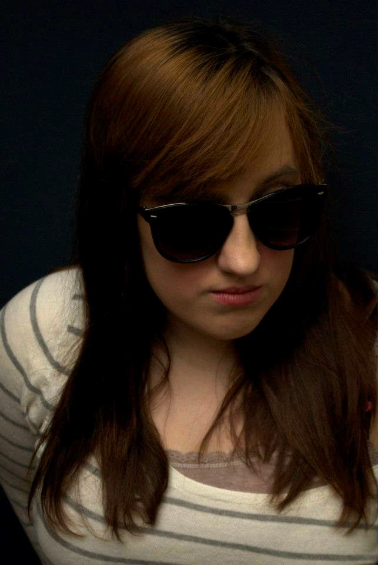
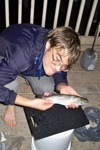
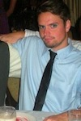
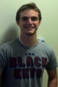
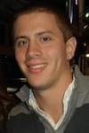

| mission meet the staff travel after party awards faq contact us |

| pressroom photo gallery |

| volunteer sponsors |
 |
Jon Whitaker—Assistant Director (Public Relations, Art & Design) jwhitaker@visionsfilm.org Johannesburg-born Jon Whitaker is a super senior at the University of North Carolina Wilmington, pursuing a BFA in Film Studies. As a producer, his interests lie in performance cinema, post-internet art, the New Aesthetic, and festival production. Now in his second year as an assistant director for the Visions Film Festival & Conference, he also serves as co-director of the Dirt Poor Filmmakers Festival in Wilmington—a monthly screening party curated by local industry members, dedicated to exhibiting micro-budget films made by the "99 Percent." |
| Hamilton Hudson—Assistant Director (Programming, Traffic, and Operations) hhudson@visionsfilm.org Hamilton Hudson is a senior at UNCW with a major in Film Studies and a minor in English. She is currently the Visions Assistant Director of Programming, Traffic, and Organization. She worked Public Relations for Visions last year, and her follow-up article on Visions 2012 was published in UNC@Work. This summer she interned at Screen Gems Studios, worked on numerous short film projects around town, and is also contributing to the upcoming Cucalorus Film Festival as a short film programmer. |
|
| Natasha Alden—Assistant Director (Hospitality, Events, and After Party) nalden@visionsfilm.org Natasha is a senior at the University of North Carolina Wilmington, pursuing a double major in Film Studies and Business Administration with a focus in Marketing. She has previously attended the University of Wollongong in Australia, is an active member for UNCW's International Film Committee, and has completed an internship at EUE/Screen Gems Studios. Natasha served as the hospitality coordinator for the second annual Visions Film Festival and Conference and is returning this upcoming year as an Assistant Director. She has won numerous awards for her filmmaking and digital photography. Currently she is interning at STW Talent Agency and focusing on her animated film, Death of a Dreamer. |
|
|  | AJ Hallatt—Assistant Director (Fundraising, Development, and Awards) ahallatt@visionsfilm.org AJ Hallatt is a senior at University of North Carolina Wilmington. At 16 she produced the award-winning documentary The Name on the Lease, an emotional film cataloging homelessness in The Triad area. More recently she directed the short documentary Better Together, a compilation of animal rescue stories. She is a co-founding member and the event coordinator of the Dirt Poor Filmmakers Festival. Her senior experimental thesis, "Little Death," is currently in pre-production. |
Programming • Traffic • Operations
|  | Matt Gossett Matthew, a native of Raleigh, NC, spent his early years of college at NC State University where he was a DJ and hosted a half-music-half-talk-show under the pseudonym Lancelot Link. Now a Film Studies major at UNCW, Matthew’s interests include experimental film and critical studies. He claims the film Eraserhead had a large impact on how he thinks about the medium and is most excited to see what abstract and original essays the 2013 Visions Film Festival and Conference attracts. |
|  | James Martin Originally hailing from New Jersey, James Martin is a senior at UNCW where he double majors in Film and Psychology. He plans on graduating In December 2013 and hopes to pursue a career as either a producer or film critic. In addition to Visions, he is also a part of Dirt Poor Filmmakers Festival, a Wilmington-based festival aimed at showcasing local filmmakers. When not working on film-related things, James enjoys surfing, biking, and engaging in life’s curiosities. |
Public Relations • Art & Design
| Benny Blevins—PR, Media & Communications Benny is a super senior at UNCW in the Film Studies program. Benny is from Fayetteville, North Carolina, and likes to travel to many places including Spain, Romania, and in a circular swath around the USA. He is currently interning at EUE/Screen Gems Studios in Wilmington. Benny hopes to be a producer, as well as write his own short films. Currently, Benny shoots wedding videos locally with Brick Street Cinema. |
|
| Katie Knox—Animator & Graphic Artist Katie Knox is a long-time Wilmingtonian, having seen most of the major hurricanes and all her years of schooling in the area. She is originally from southern California and hopes to head back west to follow her dream of being a story artist or animator for one of her favorite studios. She is currently looking to complete her final year at UNCW, after which she intends to apply to a more focused art school to continue her animation education. In the meantime, she will continue drawing cartoons, collecting art books, working retail and sewing costumes for fun. |
|
| Joey Powell—PR, Media & Communications Joey Powell is an undergraduate Film Studies major and Psychology minor at the University of North Carolina Wilmington. His written work has been many places in many different forms, having optioned a screenplay in 2011, had poetry published in The Lyricist, and written reviews and profiles for Film Matters Magazine. Joey's main interest in film is screenwriting, but he enjoys every facet of production. Above all, he believes that any group working toward a goal should have a familial interaction, and he carries that philosophy in working with the staff of the Visions Film Festival and Conference. |
Hospitality • Events • After Party
| Sarah Reedy—Hospitality & Events
Coordinator Sarah is a senior at the University of North Carolina Wilmington pursing a double major in Film Studies and Spanish. She previously attended the University of Florence, Italy where she studied photography. Prior to the school year, Sarah worked on the set of Iron Man 3 as a production assistant and intends to continue working in the Wilmington Film Industry next summer. Sarah served as a member of the hospitality team in last year’s Visions Film Festival and Conference. Currently she is working as producer on a documentary concerning the lack of racial diversity in the North Carolina public universities and its impact on the student relations. |
|
| Mary Schweers—Community Outreach Coordinator Mary is a junior majoring in Film Studies and Business Administration with a concentration in Marketing. She has participated in the Flicker Film Society and the Association for Campus Entertainment film committee at UNCW. Prior to the school year, Mary had the opportunity to work as a Production and Office Assistant for the Film Studies Program’s first feature-length narrative film Don’t Know Yet. |
|
 |
Marge Streb—Video Race Coordinator Marge is a senior at UNCW majoring in Film Studies with a minor in Leadership Studies. She has participated in multiple 48 Hour Film Festivals in Baltimore, Maryland. Marge interned at Pickerel Pie Entertainment Company in New York City this past summer and hopes to return to city life as soon as possible. She also blogs for the fashion website www.collegefashionista.com and has reported on the street style of interns in NYC and current UNCW students. Marge is excited to be a part of the Visions team during her last year at UNCW. |
|  |
Matt Marlowe—Video Race Team Matthew Marlowe is a senior at the University of North Carolina Wilmington studying toward a major in Film Studies and a minor in Sociology. Matthew participates on campus with ACM SIGGRAPH with an eyeball toward animation and modeling for short films. In his spare time, Matthew enjoys writing screenplays and playing soccer (he also likes long walks on the beach and watching foreign films). This is Matthew’s first year on the staff of Visions, and as a member of the Midday Event and Video Race departments, he is excited to make it the best year yet. |
|  |
Josh Powell—Video Race Team Josh has been making movies since elementary school when he used his mother’s VHS recorder to make short films with his brother and friends. While exploring sports in college, participating on Campbell University’s football and track & field teams, he decided that film school was a better option for his future aspirations of filmmaking. This led Josh to UNCW, where he continues to make shorts while learning all aspects of filmmaking. In the summer of 2012, Josh served as locations manager for the feature film Don’t Know Yet shot mainly in Wilmington with a crew of UNCW staff, alumni, and undergraduates. Now in his senior year, Josh aspires to produce an exceptional senior project while spreading the word about the innovative Visions Film Festival and Conference to schools and communities around the world. In the future, Josh plans on opening an indie film production company that will encourage and harbor the love of independent filmmaking. |
 |
Brooks Lee—After Party Coordinator As a senior at UNCW, Brooks Lee sees Visions as a prime opportunity to open doors for filmmakers, scholars, and students alike. A double major in Film and Communication Studies, Brooks has explored many areas of video production; doing work on local music videos, commercials, documentary projects, and a news package for ESPNU Campus Connection to name a few. Brooks looks forward to working with the Wilmington community and the rest of the staff to make this Visions Film Festival and Conference the best one yet! |
| Sway Davenport—After Party Team Sway is a senior in the Film Studies program at UNCW. He was initially drawn to filmmaking because it combines all the things he enjoys doing and allows him to foster his creative abilities. A rebel with a cause, Sway intends to lend his lively personality to Visions as part of its After Party team. Meanwhile, he plans to aid in all operations in order to produce the best Visions Film Festival and Conference yet. |
Development • Fundraising • Awards
 |
Will Davis—Development Co-Coordinator Will Davis is currently a Film Studies major at the University of North Carolina Wilmington with interests in documentary and travel/adventure filmmaking. He recently directed a short documentary, The Maco Light, about the famous North Carolina ghost legend. Currently, Will is editing a documentary about a retired Indiana welder and WWII veteran Ernie Taylor, who creates quirky metal sculptures. He is also in pre-production for a film about the relocation of family graves from the Little Tennessee Valley in Western North Carolina when the TVA flooded the area during WWII. |
 |
Sophia Lanza—Development Co-Coordinator Sophia Lanza is currently a senior at UNCW majoring in Film Studies. She is excited about working in the Development Department of the Visions Film Festival and Conference this year, as well as directing a short documentary on Offshore Wind Energy. Sophia’s passions are sharing films with other people and involving herself in environmental and political movements. After graduation, Sophia would like to continue creating documentaries, hopefully with a Wilmington area production company, and work for a local film festival. |
| Cadence Railsback—Fundraising & Awards Cadence Railsback is currently a senior in the Film Studies program at UNCW. This past year she has worked closely with Susan Walters, a talent agent in Wilmington, and with professor and director Terry Linehan as the casting director for his latest film. She is currently enrolled in Visions and enjoys working on the fundraising team. After graduation in May 2013, she plans to do The World Race, an 11-month missions trip that will move her to a different underdeveloped country each month. Afterwards, Cadence plans to settle back in Wilmington and pursue a career in casting. |
|
| Johnny Reynolds—Fundraising & Awards Johnny Reynolds is a senior film studies major at UNCW with a focus in critical studies. He recently completed an internship with Intellect Books where his responsibilities included interviewing authors, writing summaries for the website, and creating spreadsheets. He is currently working on a documentary about Wilmington's own Our Crepes & More, focusing on how the owners moved from France to open their own restaurant. |
|
About the Director |
|
| Shannon Silva—Festival Director ssilva@visionsfilm.org Shannon Silva is an Assistant Professor of Film Studies at the University of North Carolina Wilmington. An experimental and documentary filmmaker, her principal interests include issues of gender, consumerism, celebrity, fandom, and community-building creative initiatives. In addition to directing over 30 short films and videos, which have screened at festivals internationally, she has worked as Screenplay Competition Director for the Austin Film Festival and juried for the Ann Arbor Film Festival, Cucalorus Film Festival, Cinematexas and Iowa City Documentary Film Festival. Her most recent film, It’s A Girl Thing: Tween Queens and the Commodification of Girlhood (https://www.facebook.com/itsagirlthingmovie) is currently making its rounds on the festival circuit. |
|
To report a problem with site functionality, please contact the webmaster.
Copyright 2012 Visions Film Festival & Conference